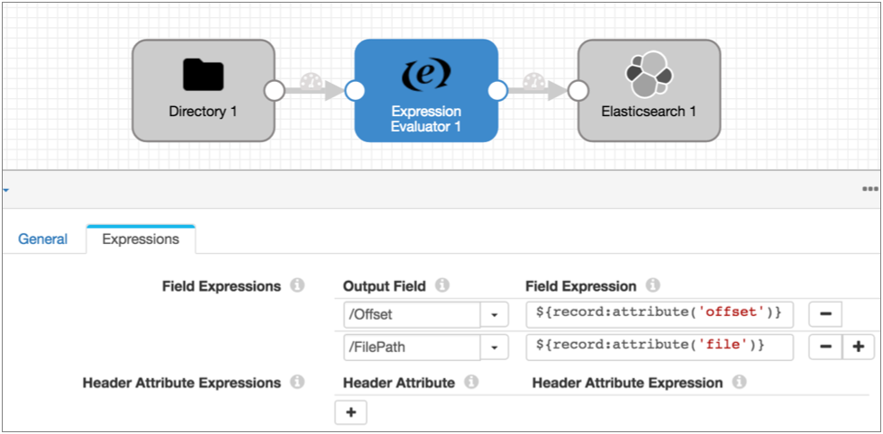

Record Header Attributes
Record header attributes are attributes in record headers that you can use in pipeline logic, as needed.
Some stages create record header attributes for a particular purpose. For example, CDC-enabled origins include the CRUD operation type in the sdc.operation.type record header attribute. This enables CRUD-enabled destinations to determine the operation type to use when processing records. Similarly, the Hive Metadata processor generates record header attributes that some destinations can use as part of the Drift Synchronization Solution for Hive.
Other stages include processing-related information in record header attributes for general use. For example, event-generating stages include the event type in record header attributes in case you want to process the event based on that information. And several origins include information such as the originating file name, location, or partition for each record.
You can use certain processors to create or update record header attributes. For example, you can use an Expression Evaluator to create attributes for record-based writes.
The inclusion of attributes in record headers does not require using them in the pipeline. You can, for example, use the CDC-enabled Salesforce origin in a non-CDC pipeline and ignore the CDC record header attributes that are automatically generated.
When writing data to destination systems, record header attributes are preserved with the record only when using the Google Pub/Sub Publisher destination or when using another destination with the SDC Record data format. To preserve the information when using other data formats, use the Expression Evaluator to copy information from record header attributes to record fields.
Working with Header Attributes
You can use the Expression Evaluator or any scripting processor to create or update record header attributes. For example, the MongoDB destination requires a CRUD operation to be specified in a record header attribute. If the origin providing the data does not generate that information automatically, you can use the Expression Evaluator or scripting processor to set the attribute value.
Record header attributes are string values. You can use record:attribute functions in any expression to include attribute values in calculations.
${record:attribute('<attribute name>')}
For example, the following Expression Evaluator adds the file and offset record header attributes created by the Directory origin to the record:

Internal Attributes
Data Collector generates and updates some read-only internal record header attributes as records move from stage to stage. These attributes can be viewed for debugging issues, but can only be updated by Data Collector.
| Internal Record Header Attribute | Description | Related Function |
|---|---|---|
| stageCreator | The ID of the stage that created the record. | record:creator() |
| sourceId | Source of the record. Can include different information based on the origin type. | record:id() |
| stagesPath | List of stages that processed the record in order, by stage name. | record:path() |
| trackingId | The route the record has taken through the pipeline, starting with the sourceId, then listing the stages that processed the record. | n/a |
| previousTrackingId | The tracking ID of the record before it entered the current stage. | n/a |
| errorStage | The stage that generated the error. In error records only. |
record:errorStage() |
| errorStageLabel | The user-defined name for a stage. In error records only. |
record:errorStageLabel() |
| errorCode | The error code. In error records only. |
record:errorCode() |
| errorMessage | The error message. In error records only. |
record:errorMessage() |
| errorTimestamp | The time that the error occurred. In error records only. |
record:errorTime() |
| errorStackTrace | The stack trace associated with the error. In error records only. |
n/a |
Header Attribute-Generating Stages
| Stage | Description |
|---|---|
| Origins that process Avro data and the Data Parser processor | Includes the Avro schema in an avroSchema record header attribute. |
| Amazon S3 origin | Can be configured to include system-defined and user-defined
object metadata in record header attributes.
Includes event header
attributes when generating events.
|
| Amazon SQS Consumer origin | Can be configured to include SQS message attributes in record
header attributes.
|
| Directory origin | Includes information about the originating file for
the record in record header attributes.
Includes event header attributes when generating events.
|
| File Tail origin | Includes information about the originating file for
the record in record header
attributes.
Can be configured to use
tag attributes for sets of files.
Includes event
header attributes when generating events.
|
| Google Pub/Sub Subscriber origin | When available, includes user-defined message attributes in
record header attributes.
|
| HTTP Client origin | Includes response header fields in record header attributes.
|
| JDBC Multitable Consumer origin | Includes table and data type information in record header
attributes.
Includes event header
attributes when generating events.
|
| JDBC Query Consumer origin | Can be configured to include table and data type information in
record header attributes.
Includes the CRUD operation
type in the sdc.operation.type record header attribute when
reading change capture data from Microsoft SQL Server.
Includes event
header attributes when generating events.
|
| Kafka Consumer origin | Includes information about the origins of the record in record
header attributes.
|
| Kafka Multitopic Consumer origin | Includes information about the origins of the record in record
header attributes.
|
| MapR DB CDC origin | Includes CRUD and CDC information in record header attributes.
|
| MapR Multitopic Streams Consumer origin | Includes information about the origins of the record in record
header attributes.
|
| MapR Streams Consumer origin | Includes information about the origins of the record in record
header attributes.
|
| MongoDB Oplog origin | Includes CRUD information in CDC header attributes.
|
| MySQL Binary Log origin | Includes the CRUD operation type in the sdc.operation.type header
attribute.
|
| Oracle CDC Client origin | Includes CRUD and CDC information in record header attributes.
Includes event header
attributes when generating events.
|
| RabbitMQ Consumer origin | Includes RabbitMQ attributes in record header attributes.
|
| Salesforce origin | Includes Salesforce information about the origins of the record
in record header attributes.
Includes the CRUD operation
type in the sdc.operation.type header attribute.
Includes event
header attributes when generating events.
|
| SFTP/FTP Client origin | Includes information about the originating file for
the record in record header
attributes.
|
| SQL Server CDC Client origin | Includes CRUD and change tracking information in record header
attributes.
Includes the CRUD operation type in the sdc.operation.type header
attribute.
Includes event header attributes when
generating events.
|
| SQL Server Change Tracking origin | Includes CRUD and CDC information in record header attributes.
Includes the CRUD
operation type in the sdc.operation.type header attribute.
Includes event
header attributes when generating events.
|
| Expression Evaluator processor | Can be configured to create or update record header attributes.
|
| Groovy Evaluator processor |
Can be configured to create or update record header attributes.
Includes event header attributes when generating events.
|
| Hive Metadata processor | Generates record header attributes for the data record. These
attributes can be used for record-based writes as part of the Drift Synchronization Solution for Hive.
Can be configured to add
custom header attributes to the metadata record.
|
| HTTP Client processor | Includes response header fields in record header attributes.
|
| JavaScript Evaluator processor | Can be configured to create or update record header attributes.
Includes event header
attributes when generating events.
|
| Jython Evaluator processor | Can be configured to create or update record header attributes.
Includes event header
attributes when generating events.
|
| Schema Generator processor | Generates schemas and write them to a user-defined record header
attribute.
|
| Amazon S3 destination |
Includes event header attributes when generating events.
|
| Azure Data Lake Store destination |
Includes event header attributes when generating events.
|
| Hadoop FS destination | Includes event header attributes when generating events.
|
| Hive Metastore destination | Includes event header attributes when generating events.
|
| Local FS destination | Includes event header attributes when generating events.
|
| MapR FS destination | Includes event header attributes when generating events.
|
| HDFS File Metadata executor | Includes event header attributes when generating events.
|
| Hive Query executor | Includes event header attributes when generating events.
|
| MapR FS File Metadata executor | Includes event header attributes when generating events.
|
| MapReduce executor | Includes event header attributes when generating events.
|
| Spark executor | Includes event header attributes when generating events.
|
Record Header Attributes for Record-Based Writes
Destinations can use information in record header attributes to write data. Destinations that write Avro data can use Avro schemas in the record header. The Hadoop FS and MapR FS destinations can use record header attributes to determine the directory to write to and when to roll a file as part of the Drift Synchronization Solution for Hive. For more information, see Drift Synchronization Solution for Hive.
To use a record header attribute, configure the destination to use the header attribute and ensure that the records include the header attribute.
The Hive Metadata processor automatically generates record header attributes for Hadoop FS and MapR FS to use as part of the Drift Synchronization Solution for Hive. For all other destinations, you can use the Expression Evaluator or a scripting processor to add record header attributes.
- targetDirectory attribute in the Azure Data Lake Store, Hadoop FS, Local FS, and MapR FS destinations
- The targetDirectory record header attribute defines the directory where the record is written. If the directory does not exist, the destination creates the directory. The targetDirectory header attribute replaces the Directory Template property in the destination.
- When you use targetDirectory to provide the directory, the time basis configured for the destination is used only for determining whether a record is late. Time basis is not used to determine the output directories to create or to write records to directories.
- To use the targetDirectory header attribute, on the Output tab, select Directory in Header.
- avroSchema attribute in destinations that write Avro data
- The avroSchema header attribute defines the Avro schema for the record. When you use this header attribute, you cannot define an Avro schema to use in the destination.
- To use the avroSchema header attribute, on the Data Format tab, select the Avro data format, and then for the Avro Schema Location property, select In Record Header.
- roll attribute in the Azure Data Lake Store, Hadoop FS, Local FS, and MapR FS destinations
- The roll attribute, when present in the record header, triggers a roll of the file.
- You can define the name of the roll header attribute. When you use the Hive Metadata processor to generate the roll header attribute, use the default "roll" attribute name. When you use an Expression Evaluator, use the name of the roll attribute that you defined in the processor.
- To use a roll header attribute, on the Output tab, select Use Roll Attribute and define the name of the attribute.
Generating Attributes for Record-Based Writes
You can use the Hive Metadata processor, the Expression Evaluator, or a scripting processor to generate record header attributes for record-based writes. The Hive Metadata processor automatically generates record header attributes for Hadoop FS and MapR FS to use as part of the Drift Synchronization Solution for Hive. For all other destinations, you can use the Expression Evaluator or a scripting processor to add record header attributes.
- Generating the target directory
- When using the Expression Evaluator or scripting processor to generate the target directory, note the following details:
-
- The destination expects the directory in a header attribute named "targetDirectory".
-
The destination uses the directory exactly as written in the targetDirectory header attribute. Unlike directory templates, the directory specified in the targetDirectory attribute should not include any components that require evaluation, such as runtime parameters, variables, or runtime properties.
-
When you define the expression that evaluates to a directory, you can use any valid component, including expressions that evaluate data in the record.
-
For example, you want to write records to different directories based on the Data Collector that runs the pipeline, and the region and store ID where the transaction took place. You can set up a runtime resource named DIR that defines the base for the directory and define DIR for each Data Collector that runs the pipeline. Then, you can use the following expression in the Expression Evaluator to define the targetDirectory attribute:
${runtime:conf('DIR')/transactions/${record.value('/region')}/${record.value('/storeID')} - Generating the Avro schema
- When using the Expression Evaluator or a scripting processor to generate the
Avro schema, note the following details:
- The destination expects the Avro schema in a header attribute named "avroSchema".
- Use the standard Avro schema format, for example:
{"type":"record","name":"table_name","namespace":"database_name", "fields":[{"name":"int_val","type":["null","int"],"default":null}, {"name":"str_val","type":["null","string"],"default":null}]} - The database name and table name must be included in the Avro schema.
-
Tip: You might use an Avro schema generator to help generate the Avro schema.
- Generating the roll attribute
- When using the Expression Evaluator or scripting processor to generate the
roll attribute, note the following details:
- Use any name for the attribute and specify the attribute name in the destination.
- Configure an expression that defines when to roll files.
- On the Expressions tab of the Expression Evaluator, specify
the Header Attribute name.
To generate a target directory, use targetDirectory.
To generate an Avro schema, use avroSchema.
You can use any name for a roll indicator header attribute.
- For the Header Attribute Expression, define the expression that evaluates to the information you want the destination to use.
For information about generating record header attributes with scripting processors, see the scripting processor documentation.
Viewing Attributes in Data Preview
You can use data preview to view the record header attributes associated with a record at any given point in the pipeline. To view record header attributes, enable the Show Record/Field Header data preview property.
For example, the following image shows a record generated by the Directory origin in data preview.

The "Record Header" list displays the set of read-only internal attributes in the record at this point of the pipeline. The header attributes under "values" are the attributes created by the Directory origin.